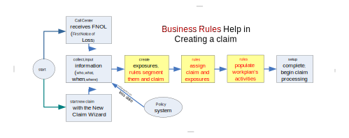

Claim segmentation
Overview of claim segmentation
Claims are segmented into logical groups to enable multiple users to handle different parts of a claim.
Segmentation enables you to categorize incoming claims and their exposures into both segments and strategies based on business criteria, such as:
- Segments that describe the type and severity of losses, such as multi-car, single car, injuries, and glass only
- Segments that describe the loss location, such as close to field office
- Strategies based on policyholder type, such as normal, preferred, sensitive, or questionable
These category pairings, called segmentation, help assignment rules make good choices when deciding how to handle the loss. For example, if the segment is Theft and the strategy is Preferred, then assign the claim to the closest office for fast-track processing.
Automated claim setup
After the initial claim information is entered into ClaimCenter, automated processes set up the claim to go to its new owner, ready to be worked on. Setup rules determine claim segmentation, assign the work, and generate a workplan.
For claims generated in ClaimCenter, these setup rules run on exiting the New Claim wizard. If the claim does not pass final validation at the New Loss level, all setup rule actions are reversed. For imported claims, these setup rules again run prior to your saving the claim. The claim must then pass validation at the New Loss level.

Assignment of work
Assignment determines the baseline strategy to be applied to the claim and defines the preliminary handling. ClaimCenter makes assignments based on claim attributes and adjuster profiles, including adjuster skills, current workload, and any other available information. Besides assigning new claims to adjusters, the ClaimCenter rules make assignments both for individual exposures within the claims and for activities associated with the claims.
See also
Workplan generation
The claim’s workplan is its list of all activities. In creating a new claim, ClaimCenter uses business rules to create an initial set of activities for processing each new claim. The workplan’s list of activities show finished and unfinished tasks, including any activities that are overdue or escalated. The claim owner or supervisor can add or reassign these activities. ClaimCenter can also add activities, such as resolving escalations.